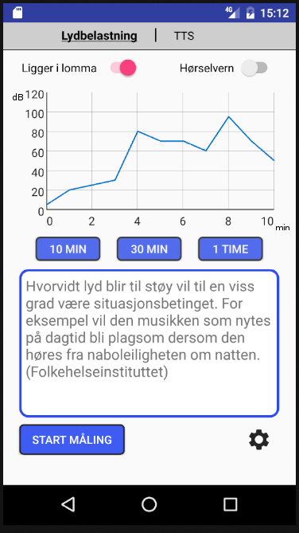
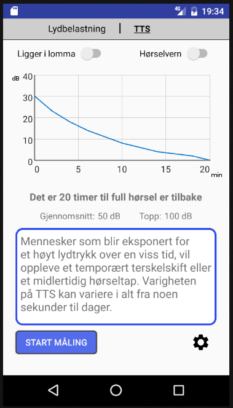
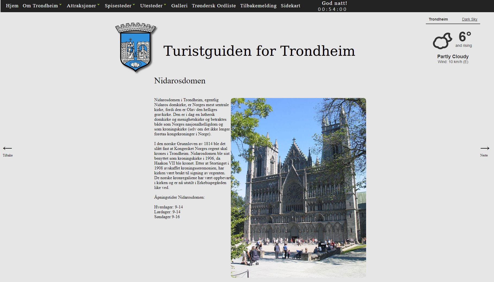
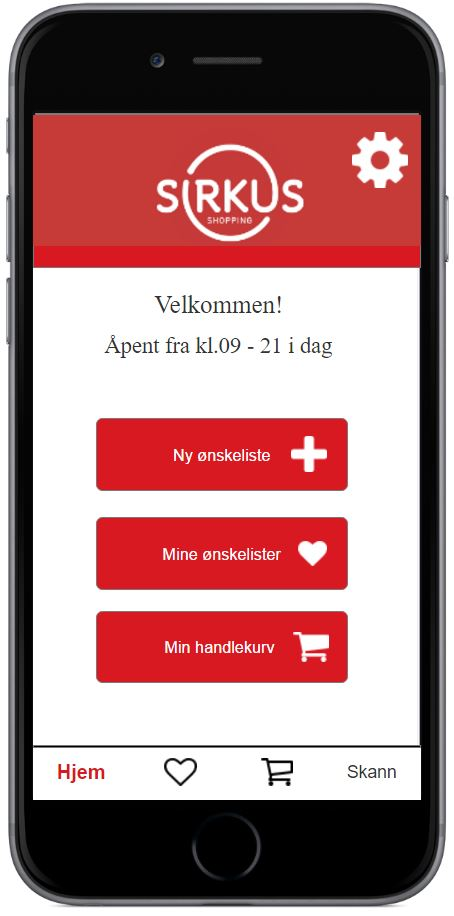
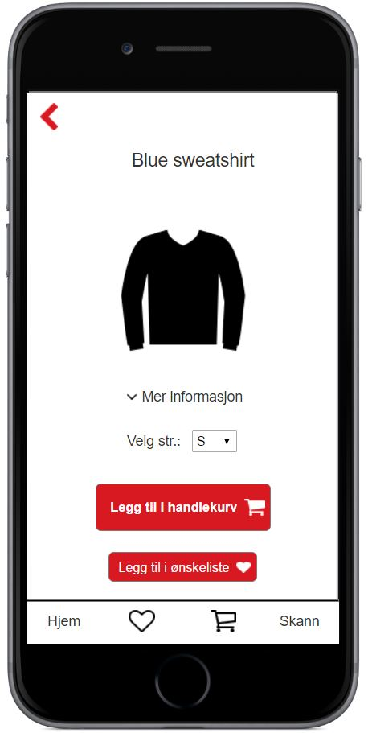

Martin Dørum – Prosjekter
Bachelorprosjekt for SINTEF (Java)
Android-app for EU-prosjektet MyCyFAPP. Appen hjelper barn med cystisk fibrose med å huske på når og hvor mye medisin de skal ta til en hver tid.
De er også linket sammen med foreldrene sine gjennom appen slik at foreldrene kan følge med om barnet har husket å ta medisinen sin.
Mine hovedområder: Utvikling av konsept, design av UI, front-end programmering.
Eksperter i team: Lyd og hørsel i hverdagen (Java)
Android-app som måler støynivået i brukerens omgivelser og gir en vurdering av brukerens totale lydbelastning over tid. Gjør det mulig å gi relevant
og personlig tilpasset informasjon om brukernes lydeksponering, og å gjøre brukerne oppmerksomme på farene ved høye lydnivåer.
Faget handlet om hvordan man lærer seg å samarbeide med personer fra andre fagfelt og andre personlighetstyper. Mye av faget gikk med til samtaler
innad i gruppa for å bli kjent med hverandre og hvordan de forskjellige gruppemedlemmene tenkte.
Mine hovedområder: Utvikling av konsept, design av UI, front-end programmering.
 
Sudokuspill laget med React
Enkelt sudokuspill laget for å lære meg React
Turistguiden i Trondheim (HTML, CSS, JavaScript)
En webside for turister i Trondheim.
Design av brukergrensesnitt
Et prosjekt som gikk ut på å designe et konsept for en mobilapp til Sirkus Shopping. Noen av teknikkene som ble brukt var utvikling av personas, low-fidelity papirprototyping, high-fidelity prototyping med Axure og brukertesting med eye-tracking.
 